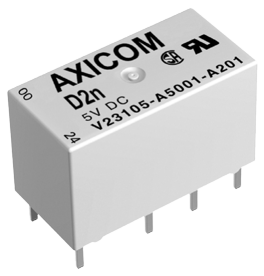
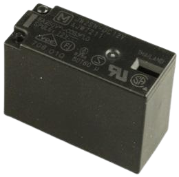
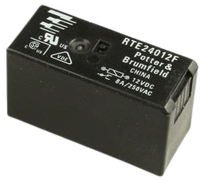
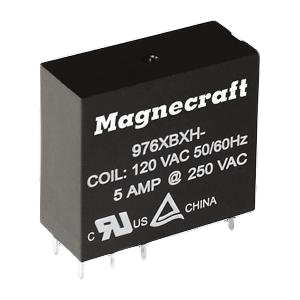

¿Qué son los relés?
Básicamente podríamos definir el relé como un interruptor eléctrico que permite el paso de la corriente eléctrica cuando está cerrado e interrumpirla cuando está abierto, pero que es accionado eléctricamente, no manualmente. El relé está compuesto de una bobina conectada a una corriente. Cuando la bobina se activa produce un campo electromagnético que hace que el contacto del relé que está normalmente abierto se cierre y permita el paso de la corriente por un circuito para, por ejemplo, encender una lámpara o arrancar un motor. Cuando dejamos de suministrar corriente a la bobina, el campo electromagnético desaparece y el contacto del relé se vuelve a abrir, dejando sin corriente el circuito eléctrico que iba a esa lámpara o motor.
Diferentes tipos de relés
En función del principio de funcionamiento y de las características estructurales, los relés son de diferentes tipos, como los electromagnéticos, los térmicos, los de potencia, los multidimensionales, etc., con diferentes potencias, tamaños y aplicaciones. La clasificación o tipos de relés depende de la función para la que se utilizan.
Algunas categorías son los relés de protección, reconexión, regulación, auxiliares y de control. Los relés de protección controlan continuamente estos parámetros: tensión, corriente y potencia; si estos parámetros violan los límites establecidos, generan una alarma o aíslan ese circuito concreto. Estos tipos de relés se utilizan para proteger equipos como motores, generadores, transformadores, etc.
Relés DPDT
Los relés DPDT son comunes, ya que consisten en dos interruptores SPDT que se activan simultáneamente. Esto permite la conmutación de dos señales completamente separadas usando un solo relé. Los relés DPDT son populares para aplicaciones de conmutación de señales, como audio, telecomunicaciones y otros tipos de interruptores de baja potencia.

Características de los Relés DPDT
Los interruptores DPDT suelen utilizar la inversión de polaridad. Es por eso que algunas variantes del interruptor DPDT, tales como los conmutadores de cruce, son cableado internamente para tal fin. Los interruptores de cruce sólo tienen cuatro terminales o conexiones, en lugar de seis que puedes ver en DPDT. Hay dos conexiones utilizadas para las salidas y las otras dos para las entradas. El interruptor selecciona una u otra polaridad normal o invertida cuando se conecta a cualquier fuente de DC, tales como la batería.
Un relé DPDT tiene una sola bobina con dos brazos que se mueven al mismo tiempo. En el interior del relé DPDT, hay dos dispositivos de conmutación SPDT independientes (polo doble tiro simple). Estos se utilizan para aplicaciones de señales de conmutación con más frecuencia de lo que no, pero también se pueden encontrar en aplicaciones de alta potencia de conmutación.
Tipos de Relés DPDT
Relé: 1A DPDT
Uso: Este es un pequeño relé de señal DPDT útil para aplicaciones de conmutación de telecomunicaciones. La calificación de la garantía es de 1 amperio a 12 V CC.

Relé: 3A DPDT
Uso: Este es un relé de señal útil para telecomunicaciones, audio y otras aplicaciones de señales de baja potencia. La calificación de la garantía es de 3 amperios a 24 VCC.

Relé: 5A DPDT
Uso: Este es un relé de señal útil para telecomunicaciones, audio de alta potencia y otras aplicaciones de conmutación de señales de alta potencia. La calificación de la garantía es de 5 amperios a 24 VCC.

Ejemplo usando el Relé: KS2E-M-DC5
Se realizó un ejemplo en el simulador de circuitos eléctricos "Wokwi".
Los materiales que se necesitaron fueron los siguientes:
Raspberry Pi Pico
2 LED's
2 Resistencias de 220 OHMs
Relé: KS2E-M-DC5
Cables
El circuito consiste en utilizar el relé para controlar los 2 LEDs con un código sencillo hecho en Python.
Haz click aquí para ir al ejemplo en Wokwi